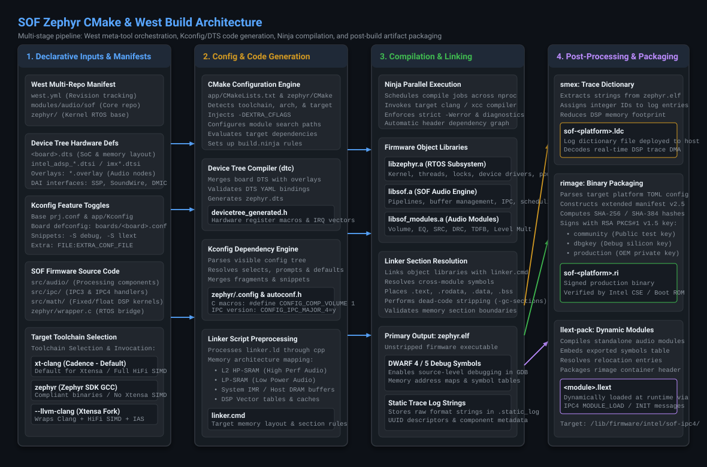
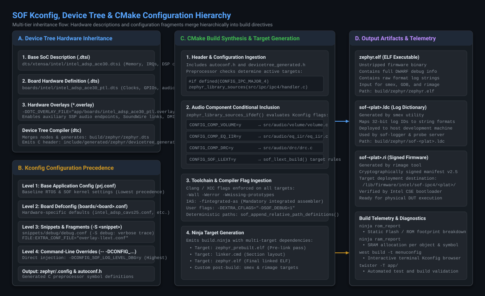

Zephyr CMake & Build Configuration#
Overview & Modern Build Paradigm#
Sound Open Firmware (SOF) builds as a native Zephyr RTOS
application and module using CMake, Ninja, and the west meta-tool. This modern architecture
replaces legacy standalone build systems with a unified, reproducible build pipeline across all
supported Digital Signal Processor (DSP) architectures, microcontroller audio bridges, and host
simulation targets.
In modern SOF, the firmware is structured as a native Zephyr module (registered in
zephyr/module.yml) alongside the primary application entry point in app/. The build system
standardizes:
Board & SoC Hardware Descriptions: Declarative Device Tree source files (
.dts,.dtsi) and runtime hardware overlays (.overlay).Feature Selection & Toggles: Standardized Kconfig configuration trees, board defconfigs, and modular snippets.
Multi-Toolchain Backends: Out-of-the-box support across three distinct compiler backends: Cadence Xtensa Tools (the production default for Xtensa DSP targets), the official Zephyr SDK (generating compliant binaries across targets, without SIMD on Xtensa), and the experimental LLVM/Clang toolchain (compiling HiFi for Xtensa SIMD).
Post-Processing & Security Pipelines: Automated trace string dictionary extraction (
smex) and cryptographic RSA binary signing (rimage) to generate production-ready firmware images (.ri) and dynamic loadable modules (.llext).
Note
Always activate the Python virtual environment before executing build commands:
source .venv/bin/activate
Build System Architecture#
The SOF build pipeline coordinates four sequential phases, orchestrated by west and
executed via CMake and Ninja:

Figure 328 Figure 323: Multi-stage SOF Zephyr build pipeline: Declarative inputs, configuration & code generation, Ninja compilation, and post-build artifact packaging.#
Declarative Inputs & Manifests: The
west.ymlmanifest tracks exact Git revisions for the SOF core repository, the Zephyr kernel, hardware abstraction layers (HALs), and external libraries (CMSIS, mbedTLS). Hardware definitions, Kconfig feature defaults, C sources, and toolchain environments feed into the configuration stage.Configuration & Code Generation: CMake processes
app/CMakeLists.txtandzephyr/CMakeLists.txt. The Device Tree Compiler (dtc) compiles hardware nodes intodevicetree_generated.h. The Kconfig engine resolves symbol dependencies, producingzephyr/.configand the C preprocessor macro headerautoconf.h. Linker scripts (linker.ld) are preprocessed into target memory layouts.Compilation & Section Linking: Ninja schedules parallel compilation jobs across workstation CPU cores. Object libraries (
libzephyr.a,libsof.a,libsof_modules.a) are compiled using strict diagnostic flags (-Wall -Werror) and linked into the unstripped executablezephyr.elfcontaining full DWARF debug symbols.Post-Processing & Artifact Packaging: Custom post-link commands process
zephyr.elf:smexstrips static trace format strings and UUID hashes, exporting them to an external log dictionary (.ldc) to minimize DSP SRAM usage.rimageconstructs the manifest header (v2.5), computes cryptographic SHA-256/384 hashes, and digitally signs the binary using RSA PKCS#1 v1.5 keys, producing the signed production firmware image (.ri).llext-packpackages dynamic loadable modules (.llext) for runtime component insertion.
Configuration & Overlay Hierarchy#
SOF utilizes a multi-tiered inheritance model for both hardware definitions and software feature toggles, ensuring that general defaults can be surgically overridden without modifying upstream files:

Figure 329 Figure 324: Multi-tier inheritance and convergence flow of Device Tree hardware descriptions and Kconfig configuration fragments into CMake build directives.#
Device Tree Resolution Hierarchy#
Hardware topology is defined through hierarchical Device Tree files:
Base SoC Definition (``.dtsi``): Located in
dts/xtensa/intel/ordts/arm/nxp/. Defines on-chip DSP cores, interrupt controllers, memory regions (L2 SRAM, LP-SRAM, HP-SRAM, IMR), and hardware DMA channels.Board Hardware Definition (``.dts``): Located in
boards/<vendor>/<board>/. Instantiates platform clocks, external codecs, audio serial interfaces (SSP, SoundWire, DMIC), and GPIO routing.Runtime Hardware Overlays (``.overlay``): Passed during the build via
-DDTC_OVERLAY_FILE="path/to/file.overlay". Enables testing auxiliary audio DAI links, alternate pin multiplexing, or development board loops.
Kconfig Configuration Precedence#
Software configuration resolves through five levels of precedence (from lowest to highest):
Level 1: Base Application Config (``app/prj.conf``): Mandatory kernel and SOF baseline defaults common across all platforms.
Level 2: Board Defconfig (``app/boards/<board>.conf``): Platform-specific hardware and memory configurations (e.g. enabling CAVS 2.5 vs ACE 3.0 drivers, core count, and default IPC version).
Level 3: Reusable Feature Snippets (``-S <snippet>``): Predefined modular configuration bundles in
snippets/(e.g.-S debugfor verbose tracing,-S llextfor dynamic modules).Level 4: Configuration Fragments (``FILE:EXTRA_CONF_FILE``): Targeted overlay files (e.g.
overlay-debug.conf).Level 5: Command-Line Overrides (``– -DCONFIG_…=y``): Direct CMake command-line flags, providing absolute override authority over all underlying files.
Target Board & Platform Matrix#
The following table summarizes primary target boards supported in SOF:
Platform Alias |
Zephyr Board Target ( |
DSP Architecture |
Hardware Platform / Target |
Default IPC |
|---|---|---|---|---|
|
|
CAVS 2.5 (Tiger Lake) |
Tiger Lake Reference Board / DUT |
IPC4 / IPC3 |
|
|
CAVS 2.5 High-Perf |
Alder Lake-S / RPL-S |
IPC4 / IPC3 |
|
|
ACE 1.5 (Meteor Lake) |
Meteor Lake / Arrow Lake-S (ARL-S) |
IPC4 |
|
|
ACE 2.0 (Lunar Lake) |
Lunar Lake Reference |
IPC4 |
|
|
ACE 3.0 (Panther Lake) |
Panther Lake Reference Board / DUT |
IPC4 |
|
|
ACE 3.0 QEMU Sim |
Host QEMU Simulator |
IPC4 |
|
|
NXP i.MX 8M Plus (DSP) |
i.MX 8M Plus EVK |
IPC4 |
|
|
NXP i.MX 8ULP Fusion |
i.MX 8ULP EVK |
IPC4 |
|
|
NXP i.MX RT1062 (M7) |
PJRC Teensy 4.1 Bridge |
Hostless |
|
|
Dual RISC-V @ 400 MHz |
ESP32-P4 Loopback Card |
Hostless |
Tip
Platform aliases supported by build scripts include:
* tgl: adl, adl-n, rpl
* tgl-h: adl-s, rpl-s
* mtl: arl, arl-s
Building Firmware with West#
Firmware compilation is invoked using west build from the root of the workspace.
Standard Build Commands#
# 1. Build Tiger Lake (TGL) firmware for target DUT
west build -b intel_adsp_cavs25 -d build-tgl app/
# 2. Build Arrow Lake (ARL-S / MTL) firmware for target DUT
west build -b intel_adsp_ace15_mtpm -d build-arl app/
# 3. Build Panther Lake (PTL) firmware for target DUT
west build -b intel_adsp_ace30_ptl -d build-ptl app/
# 4. Build Teensy 4.1 standalone audio bridge firmware
west build -b teensy41 -d build-teensy app/
# 5. Build ESP32-P4 audio loopback card firmware
west build -b esp32p4 -d build-esp32 app/
Pristine and Incremental Builds#
When switching between git branches, altering Kconfig symbols, or modifying linker scripts, perform a pristine build to clean all CMake caches and temporary object directories:
# Force pristine re-configuration
west build -p always -b intel_adsp_ace30_ptl -d build-ptl app/
For routine code edits within src/, run incremental builds without -p to leverage Ninja’s
sub-second parallel recompilation:
west build -d build-ptl
Verbose Diagnostic Output#
To inspect the exact compiler invocations, include paths, and preprocessor defines generated by CMake:
west build -v -d build-ptl
Supported Toolchains & Compiler Policies#
Sound Open Firmware supports three compiler toolchain backends, controlled via the
ZEPHYR_TOOLCHAIN_VARIANT environment variable or build script options:
Cadence Xtensa Tools (XCC / xt-clang): Default for Xtensa DSP targets. A production-grade proprietary compiler suite delivering full Cadence HiFi vector SIMD optimizations, vendor-tuned scheduling, and hardware core configuration support.
Zephyr SDK (GCC Cross-Compilers): The official open-source toolchain provided by the Zephyr Project. It builds fully compliant binaries for each target architecture, but operates without SIMD on Xtensa (falling back to portable standard C scalar math).
LLVM / Clang Toolchain (Open-Source Xtensa Fork): Experimental. An open-source Clang/LLVM development effort that compiles HiFi for Xtensa SIMD without requiring proprietary Cadence licenses, while enforcing a mandatory Integrated Assembler (IAS) policy.
Toolchain Backend |
Role & Status |
Xtensa SIMD Support |
Target Architecture Scope |
License Requirement |
|---|---|---|---|---|
Cadence Xtensa Tools |
Default for Xtensa |
Full HiFi2 / HiFi3 / HiFi4 / HiFi5 SIMD |
Intel cAVS/ACE, NXP i.MX DSPs |
Proprietary (Tensilica License) |
Zephyr SDK Cross-Compilers |
Standard Open-Source |
No SIMD on Xtensa (Scalar C fallback) |
All targets (Xtensa, ARM, RISC-V) |
Open-Source (Apache 2.0 / GPL) |
LLVM / Clang (Xtensa Fork) |
Experimental Open-Source |
HiFi Xtensa SIMD (Vectorized) |
Intel cAVS / ACE DSP targets |
Open-Source (Apache 2.0 with LLVM Exception) |
Cadence Xtensa Tools (Default for Xtensa Targets)#
The Cadence Tensilica xt-clang and legacy xcc compilers represent the production default
toolchain for all Xtensa-based DSP targets (including Intel cAVS 1.8/2.5, Intel ACE 1.5/2.0/3.0,
and NXP i.MX audio DSPs).
Full HiFi SIMD Vectorization: Generates bit-exact vector code targeting Cadence HiFi2, HiFi3, HiFi4, and HiFi5 SIMD engines. Critical audio processing blocks (such as Equalizer IIR/FIR, Volume, SRC, and Dynamic Range Compression) achieve peak cycle efficiency and minimal latency using hand-tuned vendor DSP intrinsics.
Licensing & Registry Requirements: Requires an installed and licensed Cadence Xtensa Development Tools package (
XtDevTools) matching the specific target core configuration overlay (e.g.intel_adsp_ace30_ptl).
Environment Setup:
# Point to the Cadence XtDevTools installation and builds registry
export XTENSA_TOOLS_ROOT=/opt/xtensa/XtDevTools/install/tools/RI-2023.11-linux
export XTENSA_BUILDS_DIR=/opt/xtensa/XtDevTools/install/builds/RI-2023.11-linux
export XTENSA_SYSTEM=${XTENSA_BUILDS_DIR}/intel_adsp_ace30_ptl/config
# Select Cadence compiler variant (xt-clang or xcc)
export ZEPHYR_TOOLCHAIN_VARIANT=xt-clang
Building SOF with Cadence Tools:
Single-Target Build with West:
# Build Panther Lake (PTL / ACE 3.0) firmware using Cadence xt-clang west build -b intel_adsp_ace30_ptl -d build-ptl-cadence app/
Multi-Target Batch Build:
When
XTENSA_TOOLS_ROOTis defined in the shell environment, the build orchestration script automatically defaults to Cadence tools:# Batch compile Intel platforms with Cadence default toolchain ./scripts/xtensa-build-zephyr.py tgl mtl ptl
Zephyr SDK Cross-Compilers (Compliant Targets, No Xtensa SIMD)#
The official Zephyr SDK contains open-source GNU cross-compilers (GCC) maintained by the Zephyr Project.
Target Coverage: The Zephyr SDK is the standard, official toolchain for non-Xtensa targets, such as ARM Cortex-M microcontrollers (Teensy 4.1) and RISC-V platforms (ESP32-P4).
Compliance on Xtensa: The Zephyr SDK can compile valid, structurally compliant firmware binaries for each supported Xtensa target architecture.
No SIMD on Xtensa: Upstream GCC does not support Cadence Tensilica HiFi coprocessor vector extensions, registers, or intrinsic instructions. Consequently, all audio processing modules and mathematical algorithms fall back to portable standard C scalar math. Resulting firmware images execute correctly with full Zephyr RTOS and SOF IPC driver compatibility, but operate without hardware vector SIMD acceleration.
Environment Setup:
# Set toolchain variant to Zephyr SDK
export ZEPHYR_TOOLCHAIN_VARIANT=zephyr
export ZEPHYR_SDK_INSTALL_DIR=/opt/zephyr-sdk-0.16.8
Building SOF with Zephyr SDK:
Single-Target Build with West:
# Build compliant Panther Lake (PTL) binary without Xtensa SIMD ZEPHYR_TOOLCHAIN_VARIANT=zephyr \ west build -b intel_adsp_ace30_ptl -d build-ptl-zephyr app/ # Build Teensy 4.1 ARM Cortex-M7 audio bridge ZEPHYR_TOOLCHAIN_VARIANT=zephyr \ west build -b teensy41 -d build-teensy app/
Multi-Target Batch Build:
The build orchestration script provides the dedicated
-z(--zephyrsdk) flag to explicitly force Zephyr SDK compilation, even when Cadence tools are installed:# Force build of all targets using the Zephyr SDK ./scripts/xtensa-build-zephyr.py -z tgl mtl ptl
LLVM / Clang Toolchain (Experimental Open-Source with HiFi SIMD)#
The LLVM / Clang toolchain is an experimental open-source development compiler with an out-of-tree Xtensa architecture target developed for Sound Open Firmware.
HiFi SIMD on Xtensa: In contrast to GCC, the Xtensa LLVM backend is actively engineered to compile HiFi for Xtensa SIMD, enabling vector register allocation, instruction scheduling, and audio DSP intrinsics within an open-source toolchain.
Experimental Status: The LLVM Xtensa backend is currently experimental and undergoing active upstreaming and compiler validation.
Mandatory Integrated Assembler (IAS) Policy: All Clang builds for Xtensa DSP targets must utilize Clang’s native Integrated Assembler (
-fintegrated-as). The legacy GNU external assembler (as) is strictly prohibited. Firmware assembly source files (.S) must strictly comply with LLVM MC assembly syntax.
Environment Setup:
# Configure LLVM toolchain environment
export ZEPHYR_TOOLCHAIN_VARIANT=llvm
export LLVM_TOOLCHAIN_PATH=${HOME}/work/llvm-project/build
Building SOF with LLVM / Clang:
Single-Target Build with West:
# Build Panther Lake (PTL) with experimental LLVM HiFi SIMD ZEPHYR_TOOLCHAIN_VARIANT=llvm \ LLVM_TOOLCHAIN_PATH=${HOME}/work/llvm-project/build \ west build -b intel_adsp_ace30_ptl -d build-ptl-llvm app/
Multi-Target Batch Build:
# Batch compile with experimental LLVM backend ZEPHYR_TOOLCHAIN_VARIANT=llvm \ LLVM_TOOLCHAIN_PATH=${HOME}/work/llvm-project/build \ ./scripts/xtensa-build-zephyr.py ptl
Kconfig Customization & Snippets#
Using Zephyr Snippets#
Zephyr Snippets provide modular, composable configuration bundles passed via -S <name>:
# Build PTL firmware with verbose debug logging enabled
west build -b intel_adsp_ace30_ptl -d build-ptl app/ -- -S debug
# Build MTL firmware with LLEXT dynamic module loading enabled
west build -b intel_adsp_ace15_mtpm -d build-mtl app/ -- -S llext
Passing Extra Kconfig Fragments & Flags#
Inject custom fragments or single preprocessor defines using the CMake delimiter --:
# Pass custom overlay file
west build -b intel_adsp_cavs25 app/ -- -DFILE:EXTRA_CONF_FILE=overlay-debug.conf
# Inject custom C compiler diagnostics
west build -b intel_adsp_ace30_ptl app/ -- -DEXTRA_CFLAGS="-Werror -DSOF_DEBUG_HOOKS=1"
# Override Kconfig symbol directly
west build -b intel_adsp_ace30_ptl app/ -- -DCONFIG_SOF_LOG_LEVEL_DBG=y
Key SOF Configuration Options#
Kconfig Symbol |
Default |
Architectural Purpose |
|---|---|---|
|
|
Enables modern Intel IPC4 message dispatcher, pipeline graph, and module protocol. |
|
|
Enables legacy SOF IPC3 pipeline execution and mailbox architecture. |
|
|
Enables verbose sub-millisecond DSP firmware trace statements across all components. |
|
|
Enables |
|
|
Enables standardized Module Adapter lifecycle interface for audio components. |
|
|
Enables LLEXT runtime dynamic link and loading for external audio processing modules. |
|
|
Enables multi-core Symmetric Multiprocessing scheduling across secondary DSP cores. |
Automated Build Orchestration (xtensa-build-zephyr.py)#
While west build is ideal for single-target iteration, the SOF repository includes
scripts/xtensa-build-zephyr.py to automate multi-platform batch compilation, cryptographic
signing, and deployable staging generation:
# 1. Compile all primary Intel platforms (TGL, MTL, PTL) in parallel
./scripts/xtensa-build-zephyr.py tgl mtl ptl
# 2. Build with debug overlay enabled across targets
./scripts/xtensa-build-zephyr.py -d tgl mtl ptl
# 3. Create deployable directory structure with signed binaries
./scripts/xtensa-build-zephyr.py --deployable-build ptl
# 4. Perform pristine rebuild of all supported platforms
./scripts/xtensa-build-zephyr.py -p -a
Deployable Build Output Structure#
When invoked with --deployable-build, the script generates a standardized directory tree
in build-sof-staging/ matching target filesystem requirements:
build-sof-staging/sof/intel/sof-ipc4/
├── ptl/
│ ├── community/
│ │ └── sof-ptl.ri # Signed with public community key
│ ├── dbgkey/
│ │ └── sof-ptl.ri # Signed with debug silicon key
│ ├── sof-ptl.ri # Default production binary
│ └── sof-ptl.ldc # Smex trace dictionary file
└── mtl/
├── community/
│ └── sof-mtl.ri
└── sof-mtl.ldc
Deploy these artifacts directly to target DUTs:
# Deploy to target DUT (e.g. Panther Lake PTL)
scp build-sof-staging/sof/intel/sof-ipc4/ptl/sof-ptl.ri root@<dut>:/lib/firmware/intel/sof-ipc4/ptl/
scp build-sof-staging/sof/intel/sof-ipc4/ptl/sof-ptl.ldc root@<dut>:/lib/firmware/intel/sof-ipc4/ptl/
Static Memory Footprint Analysis#
Monitoring static memory allocation is critical on embedded DSP targets where SRAM is strictly constrained. CMake and Ninja provide built-in telemetry targets to inspect memory usage:
Flash / ROM Usage Breakdown#
ninja -C build-ptl rom_report
This prints a hierarchical tree detailing read-only static memory (.text and .rodata)
consumed by each subsystem, library, object file, and symbol:
Path Size
================================================================
libsof.a 84210
src/audio/volume/volume.c 4120
src/audio/eq_iir/eq_iir.c 6840
src/ipc/ipc4/handler.c 5120
libzephyr.a 48290
kernel/sched.c 3210
SRAM / RAM Allocation Breakdown#
ninja -C build-ptl ram_report
This analyzes read-write data sections (.data, .bss, heap allocations, and thread stacks):
Path Size
================================================================
libsof.a 24560
src/audio/buffer.c 12288
zephyr/kernel 8192
main_stack 4096
Troubleshooting Common Build Failures#
Linker Region Overflow Errors#
error: region `RAM' overflowed by 16384 bytes
Root Cause: The combined footprint of static buffers, heap, and code exceeds available SRAM in the board’s linker script.
Resolution:
Inspect
ram_reportto identify bloated static arrays or uncompressed tables.Reduce static trace logging verbosity (disable
CONFIG_SOF_LOG_LEVEL_DBG).Move cold initialization code to IMR or DRAM regions using linker placement macros (
__imr_text).
Integrated Assembler (IAS) Syntax Errors#
error: <unknown>:0: error: invalid instruction mnemonic 'entry'
Root Cause: An assembly file is being compiled with Clang’s Integrated Assembler but contains GNU-specific syntax or macros incompatible with LLVM MC.
Resolution: Ensure the Xtensa configuration overlay is loaded in LLVM and verify that all instructions conform to Clang IAS syntax. GNU
asmust not be used.
Missing Device Tree Node Labels#
devicetree_generated.h:45:10: fatal error: 'DT_N_S_soc_S_ssp_0_P_reg' undeclared
Root Cause: A driver is attempting to access a peripheral node label that does not exist in the active board Device Tree.
Resolution: Inspect
build/zephyr/zephyr.dtsto verify node spelling, status (status = "okay";), and compatible string bindings. Inject required overlay nodes via-DDTC_OVERLAY_FILE.
Rimage Signing Key Failures#
rimage: error: unable to open private key file: /path/to/key.pem
Root Cause: The requested RSA signing key does not exist or permissions prevent access.
Resolution: For development builds, use the default public community key (
-k keys/otc_private_key.pem) or pass--key-type-subdir community.